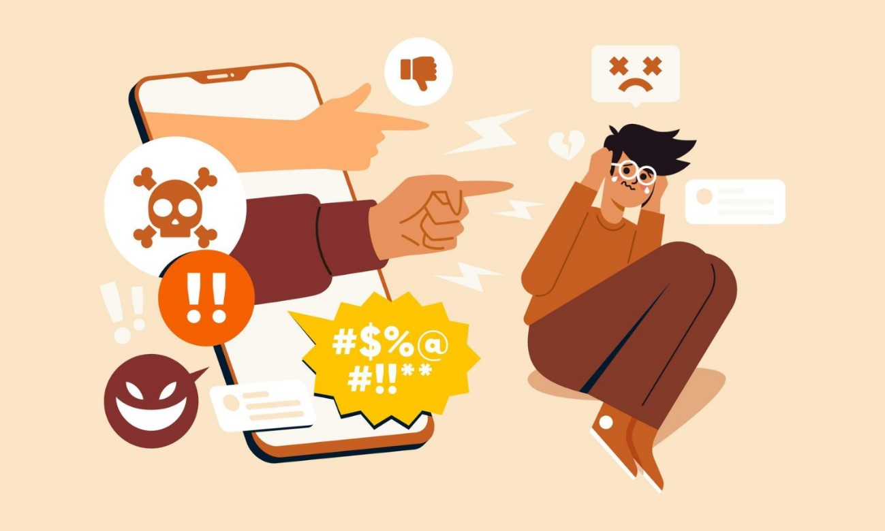

EFECTOS PSICOLÓGICOS Y EMOCIONALES
Salud Mental
Ansiedad y depresión: La comparación social constante, el ciberacoso y la adicción a las redes sociales pueden tener un impacto negativo en la salud mental de los jóvenes, contribuyendo a la ansiedad, la depresión y otros problemas.
Baja Autoestima: La exposición constante a imágenes idealizadas en las redes sociales puede afectar la percepción de uno mismo y contribuir a la baja autoestima, especialmente entre los adolescentes y jóvenes adultos.
Soledad: A pesar de estar "conectados" a través de las redes sociales, muchos jóvenes se sienten solos y aislados. La falta de interacción cara a cara y la superficialidad de las relaciones en línea pueden contribuir a este sentimiento de soledad.
